I build custom WordPress plugins, API integrations, webhook systems, and backend automation solutions using PHP, JavaScript, AJAX, and MySQL.
I am a WordPress developer with 1 year of professional experience building custom plugins, API integrations, webhook automation systems, and backend workflows. My focus is creating scalable, maintainable, and efficient solutions that help businesses automate processes and connect WordPress with external systems.
A custom WordPress automation plugin developed to send form submission data to external systems using dynamic webhook requests. The plugin allows administrators to configure webhook endpoints, HTTP methods, custom headers, and payloads directly from the WordPress dashboard. Features implemented:
This project demonstrates WordPress plugin architecture, AJAX processing, REST communication, backend automation, database operations, and third-party integrations.
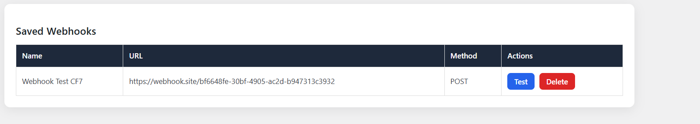
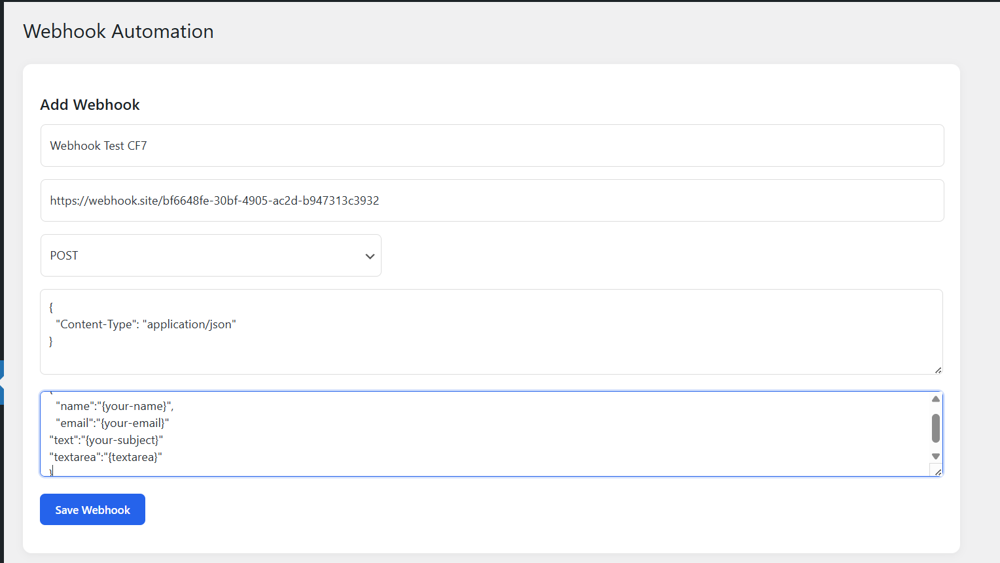
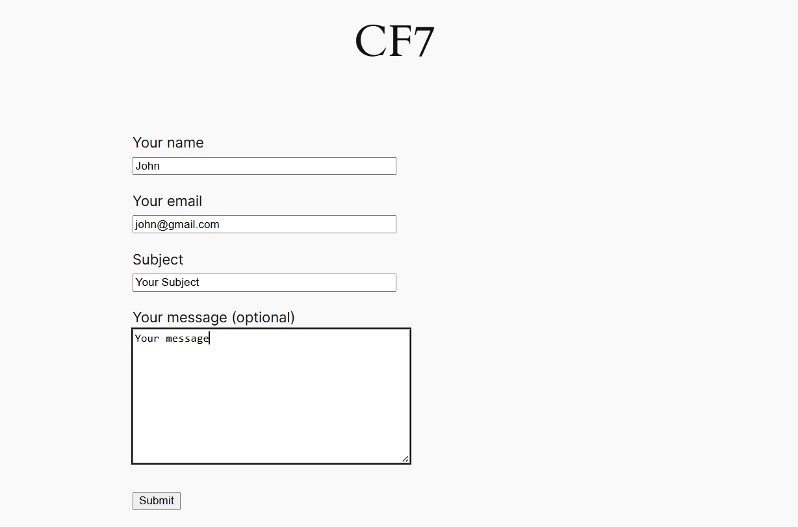
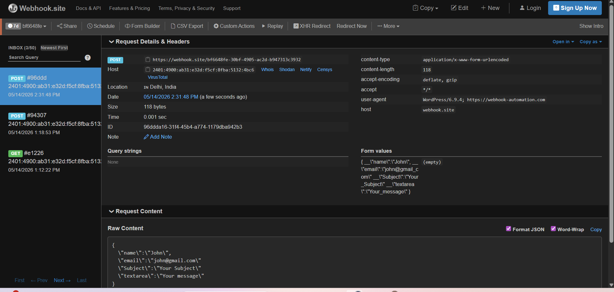
A WordPress automation plugin created to synchronize external API data with WordPress through scheduled cron-based processing and manual synchronization. Administrators can configure API endpoints, define synchronization intervals, and monitor synced records directly from a custom dashboard.
This project demonstrates API consumption, scheduled background processing, automation workflows, AJAX development, and data persistence within WordPress.
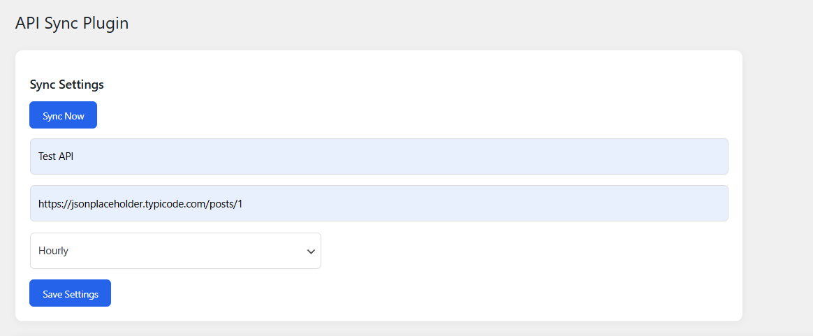
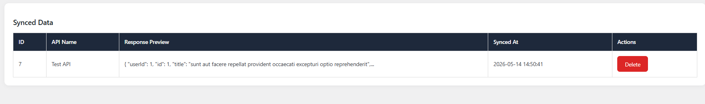
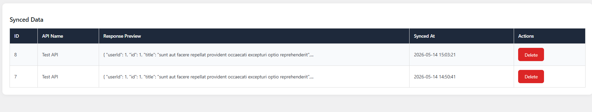
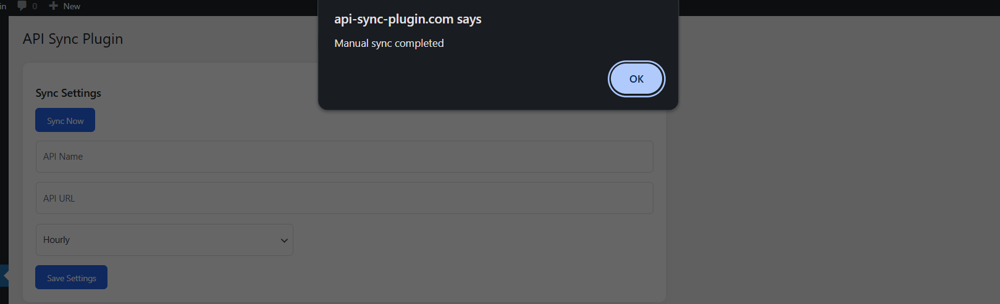
A full-stack PHP web application built from scratch using PHP, MySQL, JavaScript, AJAX, HTML, and CSS. The system provides a responsive public website, contact management functionality, and an administrator dashboard for viewing submitted records.
This project demonstrates full-stack development, authentication systems, AJAX communication, database design, CRUD operations, and responsive frontend implementation.
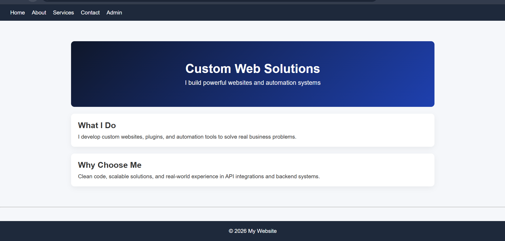
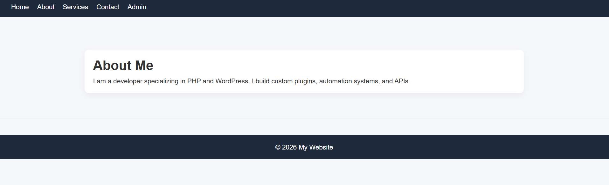
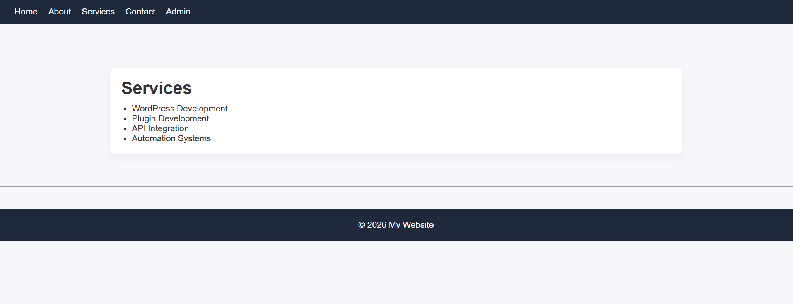
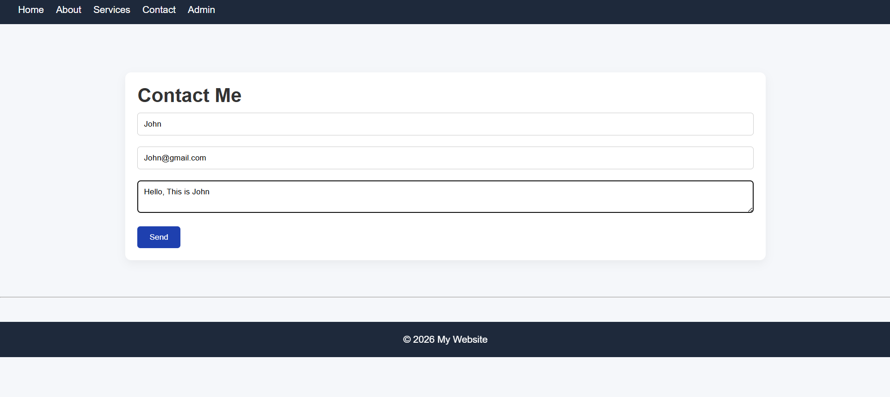
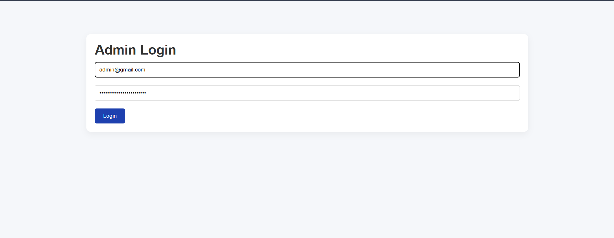
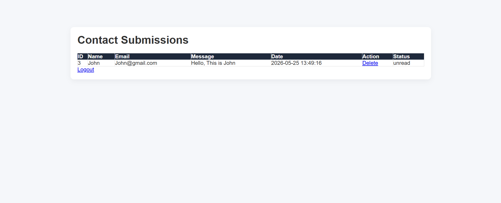
1 Year Professional Experience